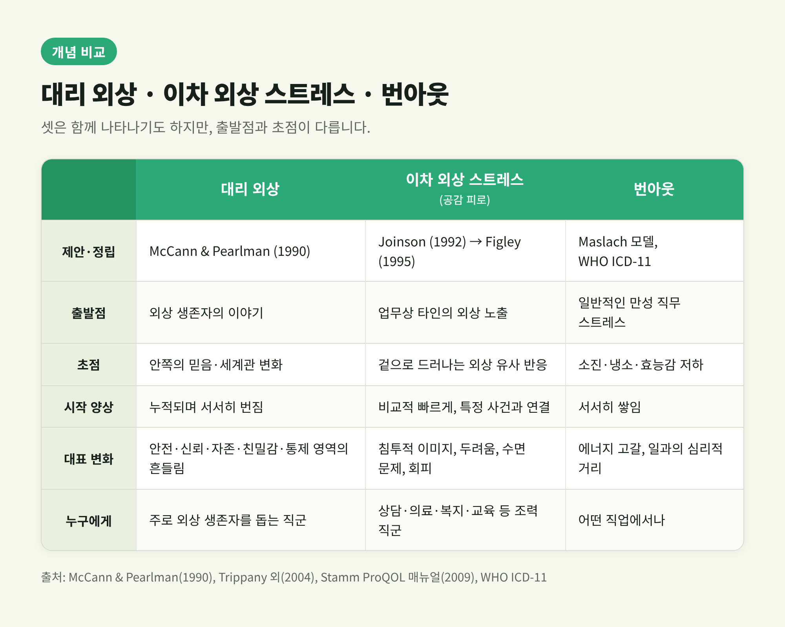
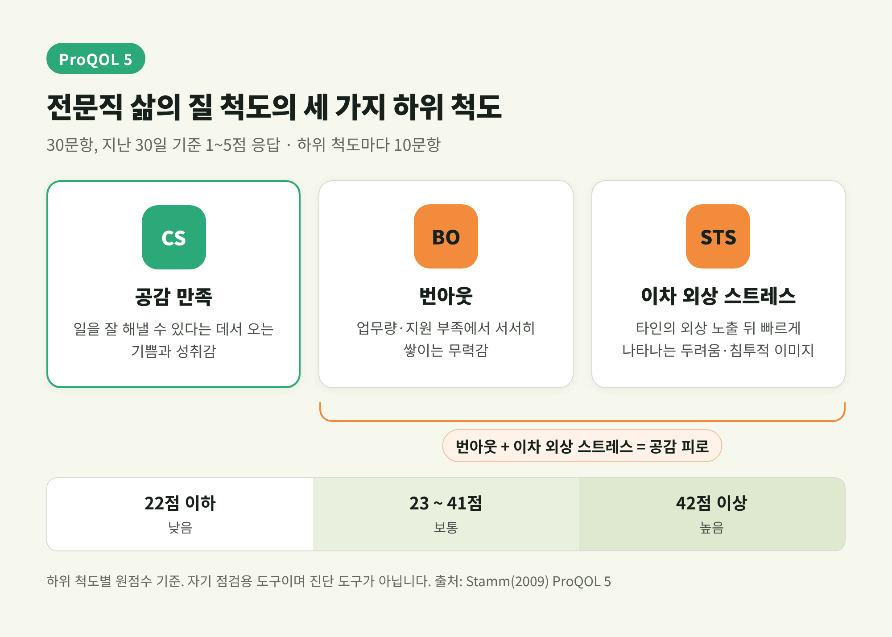
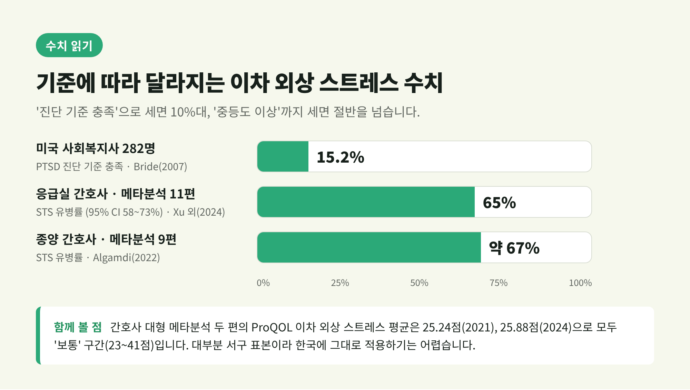
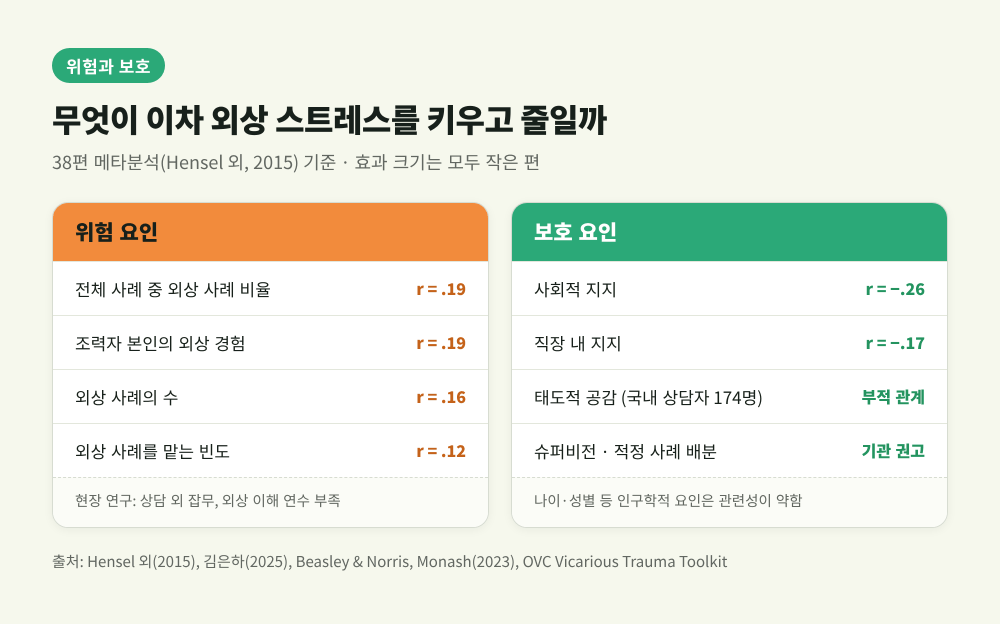
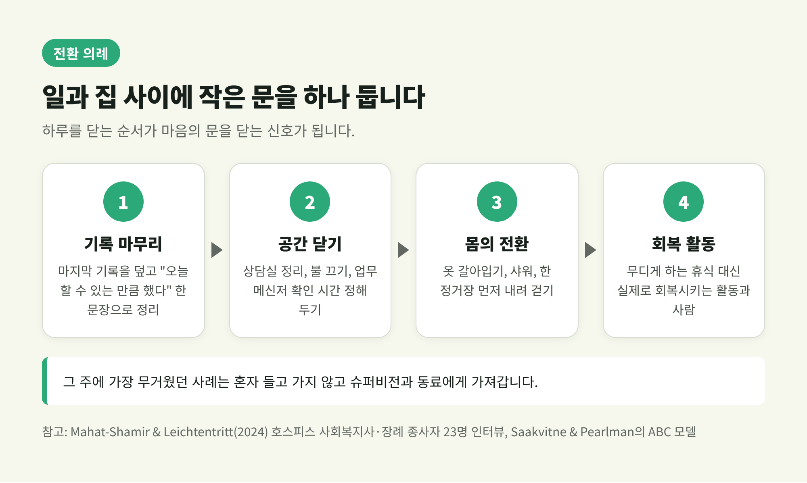

대리 외상과 공감 피로 — 고통을 듣는 사람은 왜 지치고 어떻게 회복할까
이번 글에서는 상담사, 상담교사, 간호사, 사회복지사처럼 타인의 고통을 가까이서 듣는 사람에게 생기는 변화를 정리해 보겠습니다. 대리 외상, 공감 피로, 이차 외상 스트레스가 각각 무엇을 가리키는지, 번아웃과는 어떻게 다른지, 그리고 기관과 개인이 무엇을 할 수 있는지까지 차례로 살펴봅니다.
먼저 세 줄로 요약하면
- 대리 외상은 남의 외상을 반복해 들으며 세상과 사람을 보는 믿음이 바뀌는 것이고, 이차 외상 스트레스(공감 피로)는 외상 증상과 닮은 반응이 빠르게 나타나는 것입니다.
- 기준에 따라 수치가 크게 다르지만, 돕는 직업에서 이런 반응은 드물지 않습니다. 약해서가 아니라 직업적 노출의 결과로 봅니다.
- 회복의 출발점은 개인의 의지보다 슈퍼비전과 사례 배분 같은 기관의 구조이며, 그 위에 경계 설정·전환 의례·동료 지지가 더해져야 합니다.

■ 같은 이야기를 들은 사람에게도 흔적이 남습니다
한 사례를 먼저 떠올려 보겠습니다. 실존 인물이 아니라 여러 현장의 이야기를 섞어 만든 가상 사례입니다.
중학교 상담교사 A 선생님은 올해 유난히 위기 사례를 많이 맡았습니다. 가정에서 상처를 입은 학생, 친구에게 오래 괴롭힘을 당한 학생의 이야기를 하루에도 몇 번씩 들었습니다. 처음엔 집에 와서도 학생 얼굴이 떠오르는 정도였습니다. 몇 달이 지나자 뉴스 속 사건이 남의 일 같지 않았고, 조카가 학교에 가는 것까지 걱정됐습니다. "세상은 생각보다 훨씬 위험한 곳"이라는 생각이 마음 한쪽에 자리 잡았습니다.
A 선생님은 직접 사고를 겪지 않았습니다. 그런데도 몸과 마음은 무언가를 겪은 사람처럼 반응하고 있었습니다. 이 글이 다루는 현상이 바로 이것입니다.
■ 대리 외상, 공감 피로, 이차 외상 스트레스 — 이름마다 초점이 다릅니다
세 용어는 자주 섞여 쓰이지만, 태어난 배경과 초점이 조금씩 다릅니다.
대리 외상(vicarious trauma)은 1990년 심리학자 McCann과 Pearlman이 처음 제안했습니다. 외상 생존자를 돕는 치료자가 내담자의 외상 이야기에 노출되면서 겪는 변화를 설명하는 말입니다. 핵심은 증상보다 인지 도식, 즉 '나는 안전하다', '사람은 믿을 만하다' 같은 기본 믿음이 흔들리는 데 있습니다. 특히 안전, 신뢰, 자존, 친밀감, 통제라는 다섯 영역이 영향을 받는다고 봅니다. 이 변화는 한 번에 오지 않고 쌓이며, 일터를 넘어 개인 생활까지 번집니다. 흥미로운 점은 이론의 출발점입니다. 구성주의 자기발달 이론은 대리 외상을 반복되는 외상 이야기에 대한 "정상적인 적응"으로 봅니다. 병이라기보다 일의 성격에서 오는 결과라는 뜻입니다.
공감 피로(compassion fatigue)라는 표현은 1992년 간호사 Carla Joinson이 학술 문헌에 들여왔습니다. 응급 상황에 날마다 노출되는 병원 간호사들의 소진을 묘사하기 위해서였습니다. 이후 1995년 트라우마 연구자 Charles Figley가 책 한 권으로 개념을 정리하며 이를 "돌봄의 대가(cost of caring)"라고 불렀습니다. Figley는 공감 피로를 이차 외상 스트레스(secondary traumatic stress)와 거의 같은 뜻으로 썼고, 학계에서는 지금도 후자를 더 선호합니다.
이차 외상 스트레스는 업무를 통해 타인의 외상에 반복 노출되며 생기는 스트레스입니다. 대개 빠르게 시작되고 특정 사건과 연결됩니다. 두려움, 잠들기 어려움, 원치 않는 장면이 떠오르는 침투적 이미지, 관련된 것을 피하려는 마음이 대표적입니다. 정리하면, 이차 외상 스트레스는 겉으로 드러나는 반응에, 대리 외상은 안쪽의 세계관 변화에 무게를 둡니다.
간접 노출의 무게는 정신의학 진단 기준에도 반영되어 있습니다. 미국정신의학회의 DSM-5는 외상 사건의 혐오스러운 세부 내용에 업무상 반복적으로 노출되는 경우를 외상 노출의 한 형태로 인정합니다. 반대로 업무와 무관하게 TV나 사진으로 접한 것은 여기에 들지 않습니다. 듣는 일이 직업인 사람에게 이 기준은 남의 이야기가 아닌 셈입니다.

■ 번아웃과는 무엇이 다를까
번아웃은 앞선 글에서 여러 번 다뤘으니 차이만 짚겠습니다.
세계보건기구(WHO)는 ICD-11에서 번아웃을 "성공적으로 관리되지 않은 만성적 직장 스트레스에서 비롯된 증후군"으로 설명합니다. 의학적 질병이 아니라 직업 관련 현상으로 분류한다는 점도 함께 밝힙니다. 에너지 고갈, 일에 대한 냉소, 직업 효능감 저하가 세 축입니다.
차이는 원인과 속도에서 갈립니다. 번아웃은 업무량과 지원 부족 같은 일반적인 직무 부담에서 서서히 쌓이고, 어떤 직업에서나 생길 수 있습니다. 대리 외상과 이차 외상 스트레스는 외상 이야기라는 특정한 내용에서 비롯되며, 비교적 갑자기 시작될 수 있습니다.
다만 둘은 자주 함께 옵니다. 미국과 폴란드의 조력자를 6개월 간격으로 추적한 2015년 연구에서는 처음 측정한 번아웃이 반년 뒤 이차 외상 스트레스를 예측했지만, 그 반대 방향은 나타나지 않았습니다. 연구진은 번아웃이 일종의 '관문'일 수 있다고 해석했습니다. 지친 상태에서는 외상 이야기를 견딜 자원도 함께 줄어든다는 설명입니다. 두 표본에서 얻은 결과인 만큼 단정하기는 이르지만, 번아웃을 가볍게 넘기지 말아야 할 이유로는 충분합니다.
■ 공감 만족 — 같은 일의 다른 얼굴
남의 고통을 듣는 일이 소모만 남기는 것은 아닙니다. 이 균형을 재기 위해 널리 쓰이는 도구가 B. Hudnall Stamm이 만든 전문직 삶의 질 척도(ProQOL)입니다.
5판 기준으로 30문항이며, 지난 30일을 떠올리며 1점(전혀)부터 5점(매우 자주)까지 답합니다. 하위 척도는 셋입니다.
- 공감 만족: 일을 잘 해낼 수 있다는 데서 오는 기쁨
- 번아웃: 서서히 쌓이는 무력감, 노력이 소용없다는 느낌
- 이차 외상 스트레스: 타인의 외상 노출 뒤 빠르게 나타나는 두려움과 침투적 이미지
Stamm의 틀에서 공감 피로는 번아웃과 이차 외상 스트레스, 두 요소를 합친 개념입니다. 하위 척도마다 원점수 22점 이하는 낮음, 23~41점은 보통, 42점 이상은 높음으로 봅니다. 중요한 점은 공감 만족과 공감 피로가 한 사람 안에 동시에 있을 수 있다는 것입니다. 지쳐 있으면서도 이 일이 의미 있다고 느끼는 것, 현장에서는 오히려 흔한 모습입니다. 다만 ProQOL은 자기 점검 도구일 뿐 진단 도구가 아닙니다. 점수 하나로 상태를 판정해서는 안 됩니다.
긍정적인 변화에도 이름이 있습니다. 2007년 Hernández 등은 폭력 생존자를 돕는 치료자들이 내담자가 역경을 견뎌내는 모습을 보며 스스로도 단단해지는 현상을 대리 회복탄력성(vicarious resilience)이라 불렀습니다.

■ 얼마나 흔할까 — 숫자보다 기준을 먼저 보아야 합니다
유병률을 찾아보면 수치가 놀라울 만큼 들쭉날쭉합니다. 이유는 대부분 무엇을 셌는가에 있습니다.
- 미국 사회복지사 282명을 조사한 Bride(2007)의 연구에서는 열 명 중 일곱 명가량이 최근 일주일 사이 이차 외상 스트레스 증상을 하나 이상 겪었고, 15.2%가 PTSD 진단 기준에 해당하는 수준이었습니다.
- 응급실 간호사 연구 11편을 묶은 2024년 메타분석에서는 이차 외상 스트레스 유병률이 65%(95% 신뢰구간 58~73%)로 나왔습니다. 지역별로는 아시아 74%, 북미 59%, 유럽 53%였습니다.
- 종양 간호사를 대상으로 한 2022년 메타분석에서도 이차 외상 스트레스가 약 67%였습니다.
- 반면 간호사 2만 8천여 명(2021년), 7만 3천여 명(2024년)을 묶은 두 대형 메타분석에서 ProQOL 이차 외상 스트레스 평균은 각각 25.24점, 25.88점으로 둘 다 '보통' 구간이었습니다.
- 미국 한 교육청의 학교상담사 55명 파일럿 연구에서는 약 4분의 3이 '낮음', 나머지가 '보통'이었고, '높음'은 한 명도 없었습니다.
진단 기준에 가까운 수준만 세면 10%대, 중등도 이상까지 포함하면 절반을 넘는 셈입니다. 그러니 "조력자의 몇 퍼센트가 대리 외상을 겪는다"는 식의 단일 숫자는 조심해서 읽어야 합니다. 또 이 연구들은 대부분 미국 등 서구 고소득 국가에서 이뤄졌습니다. 한국 현장에 그대로 옮기기에는 한계가 있습니다.

■ 누가 더 지치기 쉬울까 — 위험 요인과 보호 요인
38편의 연구를 종합한 2015년 메타분석(Hensel 등)이 비교적 선명한 그림을 보여줍니다.
위험 쪽에서는 전체 사례 중 외상 사례의 비율, 외상 사례의 수와 빈도, 그리고 조력자 본인의 외상 경험이 이차 외상 스트레스와 관련이 있었습니다. 보호 쪽에서는 사회적 지지가 가장 큰 효과를 보였고, 직장 내 지지가 뒤를 이었습니다. 나이나 성별 같은 인구학적 특성은 상대적으로 관련이 약했습니다. 모든 효과의 크기가 작다는 점도 함께 기억해 둘 만합니다. 한 가지 요인이 운명을 정하지는 않는다는 뜻입니다.
공감의 '종류'도 차이를 만듭니다. 외상 상담 경험이 있는 국내 상담자 174명을 조사한 2025년 연구에서는, 내담자의 감정을 그대로 함께 느끼는 정서적 공감이 높을수록 대리 외상 점수가 높았습니다. 반면 상대를 존중하고 이해하려는 태도에 가까운 태도적 공감은 대리 외상과 반대 방향의 관계를 보였습니다. 공감을 줄이라는 뜻이 아닙니다. 공감하는 방식을 다듬을 여지가 있다는 뜻으로 읽는 편이 맞습니다.
학교 현장에서는 조금 다른 요인이 보입니다. 앞의 학교상담사 연구에서는 저소득층 학생이 많은 학교에 근무할수록, 그리고 상담 외 잡무가 많을수록 이차 외상 스트레스가 높았습니다. 연구진은 직접적인 외상 노출보다 업무 환경과 역할 혼란이 더 크게 작용했을 수 있다고 봤습니다. 호주 교사 302명 연구에서도 80% 이상이 외상을 겪은 학생을 한 명 이상 지원해 봤지만, 외상 이해 연수를 받은 교사는 38.7%에 그쳤습니다. 연차가 짧고 연수가 부족할수록 이차 외상 스트레스를 더 많이 보고했습니다.

■ 기관이 먼저 해야 할 일
예전에는 대리 외상을 개인의 자기관리 문제로 보는 시선이 강했습니다. 지금은 조직의 책임이라는 관점이 힘을 얻고 있습니다.
미국 법무부 범죄피해자국(OVC)의 대리 외상 툴킷은 '대리 외상을 이해하는 조직'의 조건을 다섯 영역으로 정리합니다. 리더십과 사명, 관리와 슈퍼비전, 근무 환경, 교육, 직원 건강입니다. 이 가운데 현장에서 가장 먼저 손댈 수 있는 것은 두 가지입니다.
첫째는 슈퍼비전입니다. 위기 사례 직후 이야기를 나눌 자리가 있는지, 사례 검토가 문제 해결만이 아니라 상담자의 마음까지 다루는지가 중요합니다. 툴킷은 성과 면담에 대리 외상에 관한 대화를 포함하라고까지 권합니다.
둘째는 사례 배분입니다. 한 사람에게 외상 사례가 몰리지 않도록 비율을 조정하고, 업무를 다양하게 섞는 것입니다. 앞서 본 메타분석에서 외상 사례의 비율과 수가 위험 요인으로 나온 만큼, 이는 가장 직접적인 예방책입니다. 상담교사라면 상담과 무관한 행정 업무를 줄이는 것 역시 같은 효과를 기대할 수 있습니다.
이 밖에 채용 단계에서 업무의 정서적 위험을 미리 알리기, 동료 지지 모임, 휴가와 개인 상담 지원 같은 장치도 함께 제안됩니다.
비판의 목소리도 있습니다. 캐나다 간호학자 Shane Sinclair 연구팀은 2017년 문헌 검토 뒤 "연민 그 자체가 특별히 사람을 지치게 한다는 증거는 찾지 못했다"고 밝혔습니다. 공감 피로라는 이름이 과도한 업무량과 서류 부담 같은 진짜 원인에서 시선을 돌리고, 조력자 개인을 문제로 만든다는 지적입니다. 개념을 어떻게 부르든, 이 비판이 가리키는 방향은 분명합니다. 해법은 개인보다 시스템에서 먼저 나와야 합니다.
■ 개인이 할 수 있는 회복
기관의 구조가 바탕이라면, 그 위에서 개인이 할 수 있는 일도 있습니다. Saakvitne와 Pearlman은 이를 ABC, 곧 인식(Awareness), 균형(Balance), 연결(Connection)로 정리했습니다.
인식은 나만의 '직업적 위험 지도'를 그리는 일입니다. 어떤 이야기에 특히 흔들리는지, 지칠 때 몸과 마음에 어떤 신호가 오는지 알아 두는 것입니다. 좋아하던 일이 슬그머니 사라졌는지, 무감각과 격한 감정이 번갈아 오는지도 살펴볼 만합니다.
균형은 일과 놀이, 휴식을 규칙적으로 배치하는 것입니다. 여기서 놓치기 쉬운 구분이 있습니다. 감각을 무디게 하는 휴식과 실제로 회복시키는 휴식은 다릅니다.
연결은 동료, 가족, 그리고 나 자신과의 관계를 돌보는 일입니다. 메타분석에서 사회적 지지가 가장 강한 보호 요인이었다는 점을 떠올리면, 동료와 사례의 무게를 나누는 짧은 대화도 가볍지 않습니다. 물론 비밀보장의 범위 안에서 이뤄져야 합니다.
경계 설정도 회복의 한 축입니다. 퇴근 뒤 업무 메신저 확인 시간을 정해 두는 것, 감당할 수 있는 사례 수를 슈퍼바이저와 솔직하게 의논하는 것이 여기에 해당합니다.
실천하기 쉬운 방법으로 의식적 전환 의례가 있습니다. 2024년 이스라엘 호스피스 사회복지사와 장례 종사자 23명을 인터뷰한 연구에서는, 많은 이들이 일과 집 사이에 나름의 '통과의례'를 두고 있었습니다. 퇴근 직후 샤워하기, 옷 갈아입기, 걸어서 귀가하기 같은 신체적 정화와 음악이나 가벼운 영상처럼 주의를 덜 쓰는 활동으로 '중간 지대'를 만드는 방식이었습니다. 의례가 늘 완벽하지는 않았습니다. 일이 꿈이나 떠오르는 생각으로 집까지 '새어 들어오는' 날도 있었습니다. 그래도 하루를 닫는 작은 순서가 마음의 문을 닫는 신호가 되어 줄 수 있습니다.
A 선생님이라면 이렇게 해 볼 수 있을 것입니다. 마지막 상담 기록을 덮은 뒤 "오늘 할 수 있는 만큼 했다"고 한 번 말하고, 상담실 불을 끄고, 한 정거장 먼저 내려 걷는 것입니다. 그리고 그 주에 가장 무거웠던 사례를 슈퍼비전에 가져가는 것입니다.

■ 흔한 오해 네 가지
"공감을 줄이면 해결된다." 앞의 연구가 보여주듯 문제는 공감의 양보다 방식에 가깝습니다. 공감을 끊으면 공감 만족도 함께 잃습니다.
"마음이 약한 사람만 겪는다." 대리 외상은 이론상 반복 노출에 대한 정상적인 적응입니다. 오히려 깊이 관여하는 사람일수록 영향을 받기 쉽습니다.
"번아웃과 같은 말이다." 겹치는 부분은 있지만 출발점이 다릅니다. 휴가로 업무 피로는 풀려도, 흔들린 세계관은 그대로 남을 수 있습니다.
"경력이 쌓이면 저절로 괜찮아진다." 근거가 엇갈립니다. 호주 교사 연구에서는 연차가 짧을수록 이차 외상 스트레스가 높았지만, 학교상담사 연구에서는 연차와 의미 있는 관련이 없었습니다. 두 연구 모두 연차보다 연수와 업무 환경 쪽을 더 주목했습니다. 시간만으로 보호막이 생기리라 기대하기는 어렵습니다.
■ 이런 신호가 이어진다면
다음과 같은 변화가 한동안 이어진다면 혼자 견디지 않으시길 권합니다.
- 상담하거나 들은 장면이 원치 않게 자꾸 떠오른다
- 잠들기 어렵거나 자주 깬다
- 세상과 사람에 대한 불신, 냉소가 눈에 띄게 늘었다
- 특정 사례나 업무를 피하고 싶은 마음이 커졌다
- 가족이나 친구와의 관계가 예전 같지 않다
이 목록은 스스로 돌아보기 위한 것이지 진단 기준이 아닙니다. 다만 증상이 지속되거나 일상생활이 어려울 정도라면, 전문 상담 기관이나 정신건강의학과 등 의료 기관의 도움을 받으시길 권합니다. 조력자도 도움을 받는 사람이 될 수 있습니다. 그것이 내담자를 오래 돕는 길이기도 합니다. 급하게 이야기 나눌 곳이 필요하다면 정신건강위기상담전화(1577-0199)를 이용할 수 있습니다.
정리하면 이렇습니다. 남의 고통을 듣는 일은 듣는 사람의 마음에도 자국을 남깁니다. 그 자국은 약함의 증거가 아니라 깊이 들었다는 흔적입니다. 그리고 그 흔적을 돌보는 일은 개인의 몫이기 전에 함께 일하는 조직의 몫입니다.
"잘 듣는 사람도 누군가에게 들려야 합니다."
이 일을 계속할 수 있겠느냐고 물으신다면, 혼자가 아니라면 충분히 그렇다고 답하고 싶습니다.
참고자료
- McCann, I. L., & Pearlman, L. A. (1990). Vicarious traumatization. Journal of Traumatic Stress, 3(1) — https://link.springer.com/doi/10.1007/BF00975140
- Trippany, R. L. 외 (2004). Preventing Vicarious Trauma. Journal of Counseling & Development, 82(1) (OVC 게재본) — https://ovc.ojp.gov/sites/g/files/xyckuh226/files/media/document/vt_summary_and_a_new_theory-508.pdf
- Figley, C. R. (1995). Compassion Fatigue (Routledge) — https://www.routledge.com/Compassion-Fatigue-Coping-with-Secondary-Traumatic-Stress-Disorder-in-Those-Who-Treat-the-Traumatized/Figley/p/book/9780876307595
- Wikipedia, Compassion fatigue — https://en.wikipedia.org/wiki/Compassion_fatigue
- Stamm, B. H. (2009). ProQOL 5 (University at Buffalo) — https://socialwork.buffalo.edu/content/dam/socialwork/home/self-care-kit/compassion-satisfaction-and-fatigue-stamm-2009.pdf
- NovoPsych, Professional Quality of Life Scale 5 — https://novopsych.com/assessments/the-professional-quality-of-life-scale-5-proqol/
- WHO, Burn-out an "occupational phenomenon" — https://www.who.int/standards/classifications/frequently-asked-questions/burn-out-an-occupational-phenomenon
- DSM-5-TR PTSD 진단 기준 — https://www.epocrates.com/sites/epocrates/files/2024-05/DSM-5-TR%20Diagnostic%20Criteria%20for%20Posttraumatic%20Stress%20Disorder.pdf
- Shoji, K. 외 (2015). What Comes First, Job Burnout or Secondary Traumatic Stress? PLoS ONE — https://pmc.ncbi.nlm.nih.gov/articles/PMC4549333/
- Hensel, J. M. 외 (2015). Meta-analysis of risk factors for secondary traumatic stress. Journal of Traumatic Stress — https://switchboardta.org/evidence/metaanalysis-of-risk-factors-for-secondary-traumatic-stress-in-therapeutic-work-with-trauma-victims/
- SSIR, Stopping the Spread of Trauma (Bride 2007 소개) — https://ssir.org/articles/entry/stopping_the_spread_of_trauma
- Xu, Z. 외 (2024). Secondary traumatic stress in emergency nurses. European Journal of Psychotraumatology — https://doaj.org/article/5f137446fd774e8d88b5ae8bd77c0c0d
- Algamdi, M. (2022). Oncology nurses' compassion satisfaction and compassion fatigue. Nursing Open — https://doaj.org/article/f0daa8b01444482fa5198619f30d93c1
- Xie, W. 외 (2021). Compassion satisfaction and compassion fatigue among nurses — https://bhwell.uky.edu/document/prevalence-compassion-satisfaction-and-compassion-fatigue-among-nurses-systematic-review
- Yi, L. 외 (2024). Compassion fatigue among nurses and nursing students. BMC Nursing — https://doaj.org/article/03613e34f4f849dea55009e364be479c
- Wu, T., & Lu, C.-R. (2025). Compassion fatigue among social workers: a scoping review. Frontiers in Psychology — https://pmc.ncbi.nlm.nih.gov/articles/PMC11809495
- Beasley, J. J., & Norris, E. K. Secondary Traumatic Stress in School Counselors: A Pilot Study. Journal of School Counseling — https://jsc.montana.edu/articles/v19n49.pdf
- Monash Lens (2023). Supporting students dealing with trauma taking a heavy toll on teachers' wellbeing — https://lens.monash.edu/@education/2023/10/17/1386161/supporting-students-dealing-with-trauma-taking-a-heavy-toll-on-teachers-wellbeing
- 김은하 (2025). 상담자의 외상상담 경험과 공감이 대리외상에 미치는 영향. 『학습자중심교과교육연구』 25(3) — https://scholar.kyobobook.co.kr/article/detail/4010070419585
- OVC Vicarious Trauma Toolkit, What is the VT-ORG — https://ovc.ojp.gov/program/vtt/what-is-the-vt-org
- Yale Law School, Managing Vicarious Traumatization — https://fivehabitsandmore.law.yale.edu/jeans-materials/vicarious-trauma/managing-vicarious-trauma
- University of Calgary (2017). Stressed? Running on empty? It's not compassion fatigue — https://ucalgary.ca/news/stressed-running-empty-its-not-compassion-fatigue-0
- Hernández, P. 외 (2007). Vicarious resilience — https://www.hhri.org/publication/vicarious-resilience-a-new-concept-in-work-with-those-who-survive-trauma/
- Mahat-Shamir, M., & Leichtentritt, R. D. (2024). Moving from the Environment of Death to the Environment of the Living — https://informahealthcare.com/doi/full/10.1080/15325024.2024.2351966
- 보건복지부, 정신건강 상담전화 안내 — https://www.mohw.go.kr/menu.es?mid=a10706040100